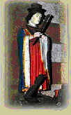
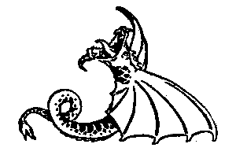

Sant Efflam hag ar Roue Arzhur

Ton
|
I
|
 II 21. Enora a oa souezhet bras, Tronoz-beure, pa zihunas, O c'houzout petra oa degou'et, Na pelec'h oa aet he fried. 22. Evel ma red dour er gwazhioù, E ro he daoulagad daeroù Dre ma oa, siwazh dezhi! losket, Gant he mignon, hag he 'fried. 23. Gouelañ 'devoa graet 'pad an deiz, Heb kavout frealz d'he ene. Gouelañ goude koan 'devoa graet, Hep gallout be'añ diboaniet. 24. Ken a gouezhas kousket skuizh-tre, Hag a zeuas de'i un huñvre : Gwelet he gwaz en he c'hichen Ker kaer evel an heol melen, 25. Hag e lare: - Deut-hu ganin, Mar fell deoc'h mirout hoc'h ene ; Deut, heb dale 'bet, war ar maez, Da ober ho silvidigezh.- 26. Ha hi, dre hun, da lavared: - Mont a rin ganeoc'h, va 'fried Lec'h a gerfec'h, da leanez, Da ober va zilvidigezh.- 27. Ar re gozh o deus lavaret Penaos e oa hi bet douget, Hag hi kousket, dreist ar mor bras, Gant an aelez, da zor he gwaz. 28. Toull dor he gwaz pa zihunas, Tri zaol war an nor a reas - Me zo ho tous hag ho pried A zo gant Doue digaset.- 29. Hag eñ d'he anaout dioc'h he mouezh, Ha da sevel kerkent, ha maez, Hag e zorn 'n he dorn e lakae, Gant komzoù kaer dimeus Doue. 30. Goude 'zavas ul lochig de'i, 'Tal e hini, a gostez kleiz, Tal ar feunteun, gant balan glas, En ur wasked, adreñv ar Roc'h c'hlas. 31. Pellik meur e chomjont eno, Ken a yeaz brud dre ar vro Eus ar burzhudoù 'devoant graet, Ha oant bemdez darempredet. 32. Un noz an dud ' oa war ar mor A welas an neñvoù digor, Hag e klefjont meuleudioù, Ken a oant bamet o selaou 33. Hag antronoz ur baourez gaezh, Hag hi kollet ganti he laezh, He bugel o vont da zemplañ A zeuas da gaout Enoran. 34. Kaer he doa gervel ' toull an nor Na deue gour evit digor Ken a welas dre un toullig An itron stouet marv-mik, 35. Hi ker kaer hag an heol melen ; Hag al loch leun a sklerijenn Hag ur paotrig gwisket e gwenn, War e zaoulin en he c'hichen. 36. Ha hi da ziblas, en ur red Da gavout Efflam benniget Digor-kaer oa dor ar vinic'hi Hag eñ marv 'vel e hini 37.An traou-mañ ma n'ankounac'her, N'emaint bet biskoazh e neb levr, Lakaet int bet e gwerzioù, Da ve'añ kanet en ilizoù. |
Extraits du 1er carnet de collecte de La Villemarqué

|
P.208
Buhez an Aotroù Sant Efflam 1. E Iberni a oa ganet Mab d'ur priñs galloudus meurbet Pemzek kant vloaz zo tremenet Hag a oa Sant Efflam añvet. 2. Ur brezel deus ar kruellañ E-devoa padet meur a vloaz Etre e zad hag ur roue A rene e-barzh ar vro-se. 3. Hogen ar peoc'h oa sinet Gant promesa eus e eured Da Enora ar briñsez, Merc'h d'ar roue ha pennherez. 4. Pa ' zeuas koulz eus an eured Ar priñs 'n-em gavas glac'haret Dre c'hoant bras d'en-em goñsakriñ Da Zoue e-lec'h dimeziñ. 5. Koulskoude, gant aoñ d'ar brezel, A eurejas ar priñs santel, Gant koñje bevañ gant e wreg Evel un tad gant e verc'hed. 6. Pa oa echu fest an eured, Efflam lavaras d'e bried: - Evit mad ar rouantelez Eo bet graet hor briedelezh, 7. Mez, Honora, va fried kêr, Hor silvidigezh rankomp ober - Doue, respontas Honora, Dleer servijout dreist pep tra. - P.209 8. An heol ne oa ket savet E oa Sant Efflam ellestret En ur gozh lestr leun a toulloù, Hep stur, hep gwern, nag hep gouelioù. 9. E gompagnunez lavare: - Aotroù, n'it ket el letr fall-se! Rag, a-sur, e vimp-ni beuzet Araok bezañ ar mor treuzet. - 10. Hogen ar priñs ken ...tel Navigas enep an avel. Un elez demeus an neñvoù ... 11. Al lestr, henchet dre an aelez, A zouaras el Lev-Drez. Ar Sant hag e gompagnunez A zaoulinont gant trugarez. 12. Ur marc'heg bras, en amzer-se, Gant boukler, kaskenn ha kleze, Pignet war ur pikol marc'h glaz, D'ar veajerien ' lavaras. 13. - Me zo roue ar Vretoned, Artur an Terrupl lez-añvet, Deuet amañ deus a Lannuon Evit distrujiñ an Dragon. 14. Pellait ac'hann, me ho ped, Ma na karit bezañ debret, Rak tost amañ zo an dragon A laka trubuilh er c'hañton. 15. Brasoc'h eo eget un ejenn, Daou gorn du gantañ 'n e benn, Spouron eo gwelet e genoù O tislonk meur a flammoù. - 16. En amzer-se, al loen spontus War-zu ar roue galloudus A zeuas gant intañsion D'eñ debriñ hep remision. 17. Artur a skoas war e benn, Gant e c'hleze ' reas, kement Hag er-fin ' droc'has e gerniel Hag al loen bloñset ' tec'has pell. 18. Artur, neuze, a lavaras: - Evañ dour ' refe din mat-bras! - Ha Sant Efflam ' reas, gant e vazh War ar roc'h kalet, ur groaz. 19. Ha raktal, ar roc'h ' zigoras, Deus e greiz ur feunteun ' redas, Hag an den santel dre gras Doue A roas he nerzh d'ar roue. P.210 20. Artur a zeuas d'an emgann Adarre, dirak Sant Efflam, Met nerzh ar flamm, c'hwezh ar moged ' Reas dezhañ kouezhañ semplet. 21. Hag Efflam ' tostaas neuze Eus an dragon estlammus-se: - Dre urzh Doue holl-galloudus, Me orderan dit monet diouzh-tu, D'en-em veuziñ ' kreiz ar mor du! - 22. Ne oa ket e ger echuet Pa oa an dragon kouezhet Gant un trouzh spontus-bras er mor A oa dindan e treid digor. 23. Ar roue Breizh pa'z e welas Eus ar Sant ar burzhudoù bras, War an traezh ' chomas daoulinet Gant souezh stouet hag ar respet. 24. Goude bezañ rentet grasoù D'ar Sant 'vit e vadelezhoù, E pedas dont, dre drugarez, Da jom gantañ en e balez. 25. Ar Sant a respontas outañ: - Aotroù, me a renk chom amañ ... er forest di ... ul lean-ti - 26. Ar Sant hag e gompagnunez A gavjont un ti dilezet Hag e rejont projed da yun Peder devezh en ur sizhun. 27. Hogen, tra buzhudus meurbet, Ur ... un ael ... ... ar S ... Magadurezh a-berzh Doue. 28. Ar Sant hag e gompagnunez Chomjont aze dre garantez. Ar Sant rae bemdeiz burzhudoù Estonus, memez d'an neñvoù! 29. Antronoz-vintin pa zavas Gwel't en-deus Santez Enora Ne ... bras Gant ... 30. ... en-em rezolvas Da vont da glask he gwaz. Kement hag erruas er-fin En ur chastel tost da Blestin. 31. War al laez un ozac'h 'gavas A oa gantañ ur barv vras A diouzhañ e goulenas Pelec'h oa Sant Efflam he gwaz. P.169 32. Erruas aotroù ar chastel Hag a oa un den milliget. Pa ' welas an dimezel koant He lamel en-devoa c'hoant. 33. Ha skañv war e varc'h a bignas Ha war he lerc'h a galoupas. 34. Mez kaer en-doe bet kerzhet, Gounid warnezhi n'halle ket, Rak ar werc'hez, mamm da Jezuz, Sikoure ar... vit... 35. Honora entreas en ti Hag an aotroù kerkent hag hi Mez en-diavaez a jomas Rak e vrec'h war an nor ' stagas. 36. Neuze Honora ' goulennas Digant ar priñs santel he gwaz: - Perak ho-peus am dilezet, Ur priñsez ' tlefec'h da garet? 37. - Me 'm-eus lezet va gurunenn, Va gwreg ha va bro hep anken. Jezuz en-deus din kelennet Oc'h ober pijinenn kalet. 38. C'hwi, Honora, kemerit skouer War Efflam, war ho pried kaer! Ait d'en-em ober leanez; A refet ho silvidigezh! - Eno Sant Efflam a varvas... 39. Un den ' bede en e chapel Pell-zo goude ma oa marvet, ' Welas tachoù gwad o sevel War ar maen e-kreiz ar pave. 40. Diplasas evit Landreger Da ziskuilhañ ar burzhud kaer D'an eskob d... e gwir Da goût ma oa kement-se gwir. 41. Korf Sant Efflam a oa kavet Gant paper pelec'h oa skrivet E holl buhez karantezus Hag e burzhudoù estonus. 42. Da Blestin e oa digaset Ar Zant gant enor ha respet. Eno, tud santel ha devot, Ait, da gas dezhañ ho pedenn! |
P.208
Vie de Monseigneur Saint Efflam 1. En Hibernie était né Un fils à un prince très puissant Il y a de cela quinze cents ans. On l'appelait Saint Efflam. 2. Il y eut une guerre des plus cruelles Qui avait duré bien des années Entre son père et un roi Qui régnait en cette contrée. 3. Or la paix fut signée Avec la promesse qu'il épouserait La princesse Honora Fille de ce roi et son unique héritière. 4. Quand vint le terme fixé pour le mariage Le prince fut désespéré Car il aspirait fort à se consacrer A Dieu, plitôt que de se marier. 5. Cependant, par crainte d'une guerre, Le saint prince se maria, A la condition d'être son épouse Comme un père avec ses filles. 6. Quand les fêtes de noces furent achevées, Efflam dit à sa femme: - C'est pour le bien de nos royaumes Que fut prononcée notre union, 7. Mais, Honora, ma chère épouse,, Il nous faut faire notre salut - Dieu, répondit Honora, Doit êtrte servi avant toute chose. - P.209 8. Le soleil n'était pas levé Que Saint Efflam s'était embarqué A bord d'un vieux bateau plein de trous, Sans barre, sans mât et sans voiles. 9. Ses compagnons disaient: - Seigneur ne montez pas sur ce vieux raffiot! Car, à coup sûr, nous coulerons, Avant d'avoir traversé la mer. - 10. Mais le prince ... Il naviga à contre-vent. Un ange descendu du ciel ... 11. Le bateau guidé par l'ange, Aborda à la Lieue-de-Grève. Le saint et ses compagnons S'agenouillèrent avec reconnaissance. 12. Un grand chevalier, en ce temps-là, Avec bouclier, casque et épée, Monté sur un énorme cheval gris, Dit aux voyageurs: 13. - Je suis le roi des Bretons. Surnommé Arthur le Terrible, Venu ici de Lannion Pour exterminer le Dragon. 14. Eloignez-vous d'ici, je vous prie, Si vous ne voulez pas être dévorés, Car le dragon est tout près d'ici A semer la terreur dans le canton. 15. Il est plus grand qu'un boeuf, Il porte deux cornes sur la tête, Il est effrayant de voir sa gueule Vomir quantité de flammes. - 16. A cet instant, l'animal effroyable S'approcha du roi puissant Avec la ferme intention De le manger, sans rémission. 17. Arthur le frappa à la tête, De son épée, tant et si bien Qu'il finit par lui trancher les cornes Et que l'animal blessé s'éloigna. 18. Arthur dit alors: - Boire de l'eau me ferait grand bien! - Et Saint Efflam dessina de son bâton Sur la roche dure une croix. 19. Et aussitôt le roc s'ouvrit, Une source jaillit en son sein, Et le saint homme, par la grâce de Dieu Rendit au roi sa force. P.210 20. Arthur retourna au combat En présence de Saint Efflam, Mais l'ardeur de la flamme, l'odeur de la fumée Le firent tomber évanoui. 21. Alors Efflam s'approche De cet épouvantable dragon: - Au nom du Dieu tout puissant, Je t'ordonne d'aller tout de suite Te noyer dans l'océan noir. - 22. Il n'avait pas fini de parler Que le dragon s'était abîmé Avec un fracas épouvantable dans la mer Qui s'était ouverte sous ses pieds. 23. Le roi de Bretagne, quand il vit De ce saint les puissants miracles, Resta agenouillé sur la grève Courbé par la stupeur et le respect. 24. Après avoir rendu grâce Au saint pour ses bienfaits Il l'invita à le suivre, en remerciement, Et à demeurer avec lui dans son palais. 25. Le saint lui répondit: - Seigneur, je dois rester ici, ... dans la forêt, pour y ... fonder un monastère. - 26. Le saint et ses compagnons Trouvèrent une maison abandonnée Et ils projetèrent de jeûner Quatre jours par semaine. 27. Mais, chose merveilleuse, On vit un ange ... ... venu du ... De la nourriture de la part de Dieu. 28. Le saint et ses compagnons Demeuraient là par amour. Le saint faisait tous les jours des miracles Etonnants même pour les Cieux! 29. Un beau matin, en se levant Il vit Sainte Honora Qui en proie à un grand ... Avec ... 30. ... elle avait résolu D'aller à la recherche de son époux. Si bien qu'elle finit par arriver Dans un château près de Plestin. 31. Sur la rive elle trouva un homme Qui avait une grande barbe A qui elle demanda S'il savait où était Saint Efflam son mari. P.169 32. Arriva le seigneur du château. C'était un homme maudit. Quand il vit la belle demoiselle Il eut envie de l'enlever. 33. Et, promptement, il sauta sur son cheval Et galopa à sa poursuite. 34. Mais il avait beau presser l'allure Il ne pouvait la rattraper: Car la Vierge, mère de Jésus Aidait la pauvrette à courir ... 35. Honora entra dans la maison Et le seigneur en même temps qu'elle. Mais il resta à l'extérieur Car son bras restait fixé à la porte. 36. Alors Honora demanda Au prince, le saint, son époux: - Pourquoi m'avez-vous abandonnée, Une princesse que vous deviez aimer? 37. - J'ai renoncé à ma couronne, Ma femme, en mon pays, sans chagrin. Jesus m'a enseigné A faire rude pénitence. 38. Vous, Honora, prenez exemple Sur Efflam, votre cher époux! Allez et faites vous nonne! Vous ferez ainsi votre salut. - Sur ce, Saint Efflam mourut... 39. Un homme priait en sa chapelle - Il y a longtemps qu'il était mort - Quand il vit du sang se répandre Sur la pierre parmi les pavés. 40. Il se rendit à Tréguier Pour révéler le grand miracle A l'évêque qui voulut, c'était son droit, Savoir si cela était vrai. 41. Le corps de Saint Efflam fut trouvé Avec un papier où était écrite Toute sa vie charitable Et ses miracles étonnants. 42. A Plestin fut transporté Le saint avec honneur et respect. Allez-y, peuple saint et dévot, Lui faire hommage de votre prière! |
P.208
Life of the Lord Saint Efflam 1. In Hibernia was born A son to a very powerful prince Fifteen hundred years ago. He was called Saint Efflam. 2. There was a most cruel war That had lasted for many years Between his father and a king Who reigned in this country. 3. Now the peace was signed With the promise that he would marry Princess Honora Daughter of this king and his only heiress. 4. When the term of the marriage came The prince was desperate Because he longed to devote himself To God, rather than getting married. 5. However, for fear of war, The holy prince married, On the condition of being with his wife Like a father with his daughters. 6. When the wedding feasts were over, Efflam said to his wife: - It was for the benefit of our kingdoms That our union was pronounced, 7. But, Honora, my dear wife, We must do our salvation - God, answered Honora, Must be served first. - P. 209 8. The sun had not risen When Saint Efflam embarked On board an old leaking boat, Without a bar, without a mast and without sails. 9. His compgnons said: - Lord, don't get on that old boat! Because, for sure, we will sink, When crossing the sea. - 10. But the prince said ... He sailed against the wind. An angel descended from heaven ... 11. The boat guided by the angel, Arrived at the Strand-League. Where the saint and his companions Knelt gratefully. 12. A great knight at that moment appeared With shield, helmet and sword, Mounted on a huge gray horse, He told to the travelers: 13. - I am the king of the Bretons. My name is Arthur the Terrible, I came hither from Lannion To exterminate the Dragon. 14. Get away from here, please, Or else you will be devoured, Because the dragon is drawing near Sow terror all over the place. 15. He is bigger than an ox, He wears two horns on his head, It's scary to see his face: He vomits flames quite a lot. - 16. At this moment, the frightful beast Attacked the mighty king With the firm intention To devour him pitiless. 17. Arthur hit him on the head, With his sword, so hard That he managed to chop off his horns And that the injured animal walked away. 18. Arthur then said: - Drinking water would do me great good! - And Saint Efflam drew with his staff On the hard rock a cross. 19. And, lo and behold, the rock opened, A spring gushed in its midst, And the holy man, by the grace of God Restored the king's strength. P. 210 20. Arthur returned to the fight In the presence of Saint Efflam, But the heat of the flame, the smell of smoke Made him fall unconscious. 21. So Efflam approached The dreadful dragon: - In the name of Almighty God, I order you to go right away And drown in the dark ocean. - 22. He hadn't finished speaking That the dragon thrust himself With a terrible crash in the sea That opened under his feet. 23. The king of Brittany, when he saw This saint's mighty miracles, Kneeling on the shore Bent over in respectful amazement. 24. After giving thanks To the saint for his blessings He invited him to follow him, in thanks, And to stay with him in his palace. 25. The saint answered him: - Lord, I must stay here, ... in the forest, for there ... I'll found a monastery. - 26. The saint and his companions Had found an abandoned house And they planned to fast there Four days a week. 27. But, a wonderful thing happened They saw an angel ... ... come from heaven ... Carrying food from God. 28. The saint and his companions Stayed there for love. The saint performed miracles every day, Amazing even Heaven! 29. One morning, when he got up He saw Saint Honora Who was plagued by a great ... With ... 30. ... she had decided To go in search of her husband. Finally she landed Next to a castle near Plestin. 31. On the shore she found a man Who had a big beard Whom she asked If he knew where her husband Saint Efflam was. P. 169 32. The Lord of the castle arrived. He was a cursed man. When he saw the beautiful young lady He wanted to take her off. 33. And, promptly, he jumped on his horse And galloped in pursuit. 34. But no matter how quick he was He couldn't catch up with her: Because the Virgin, mother of Jesus Helped the poor girl to run ... 35. Honora entered the house And the Lord at the same time as her. But he stayed outside Because his arm was still fixed to the door. 36. Then Honora asked To the prince, the saint, her husband: - Why did you abandon me, A princess you should have loved? 37. - I gave up my crown, My wife, my country, without regret. Jesus taught me To do harsh penance. 38. You, Honora, take an example On Efflam, your dear husband! Go and be a nun! You will thus do your salvation. With that, Saint Efflam died ... 39. A man was praying in his chapel - He was dead a long time ago - When he saw blood spillt Among the cobblestones. 40. He went to Tréguier To reveal the great miracle To the bishop who wanted to Find out if this was true. 41. The body of Saint Efflam was found With a paper on which was recorded All his charitable life And his amazing miracles. 42. To Plestin was transported The saint with honour and respect. Go there, holy and devout people, Pay him homage with your prayer! |
Ton kempennet gant Friedrich Silcher